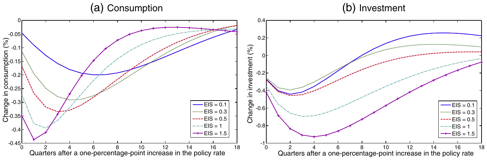
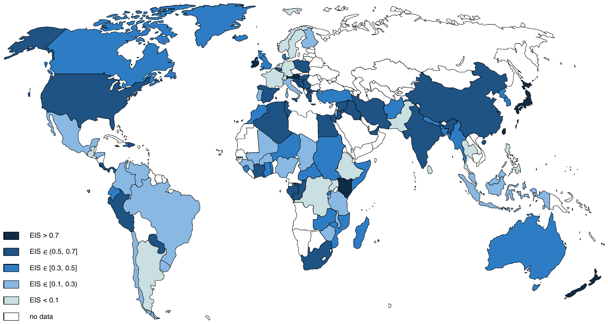
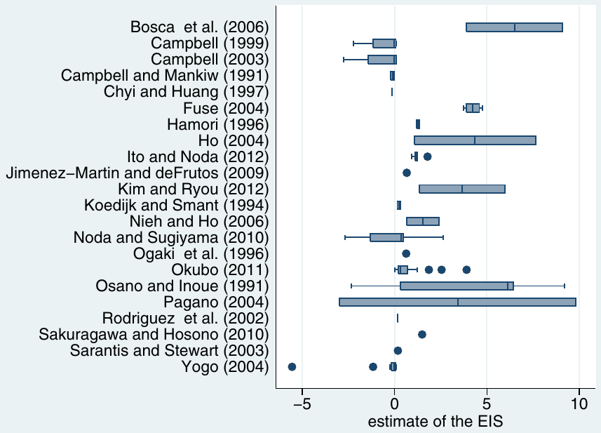
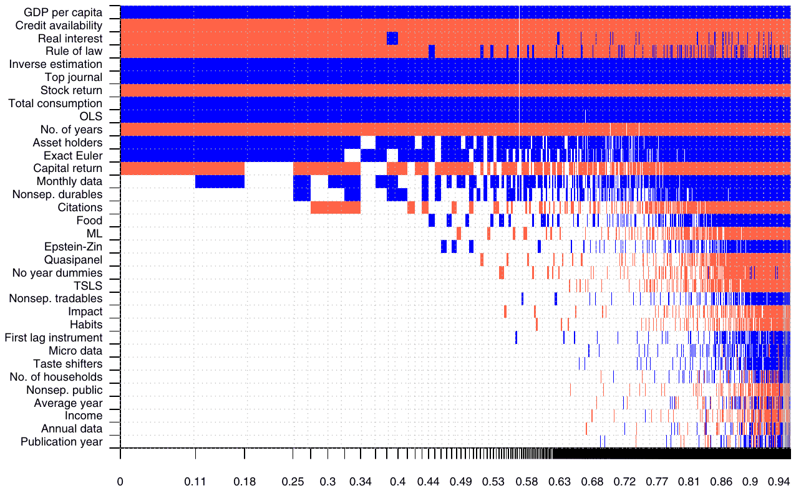
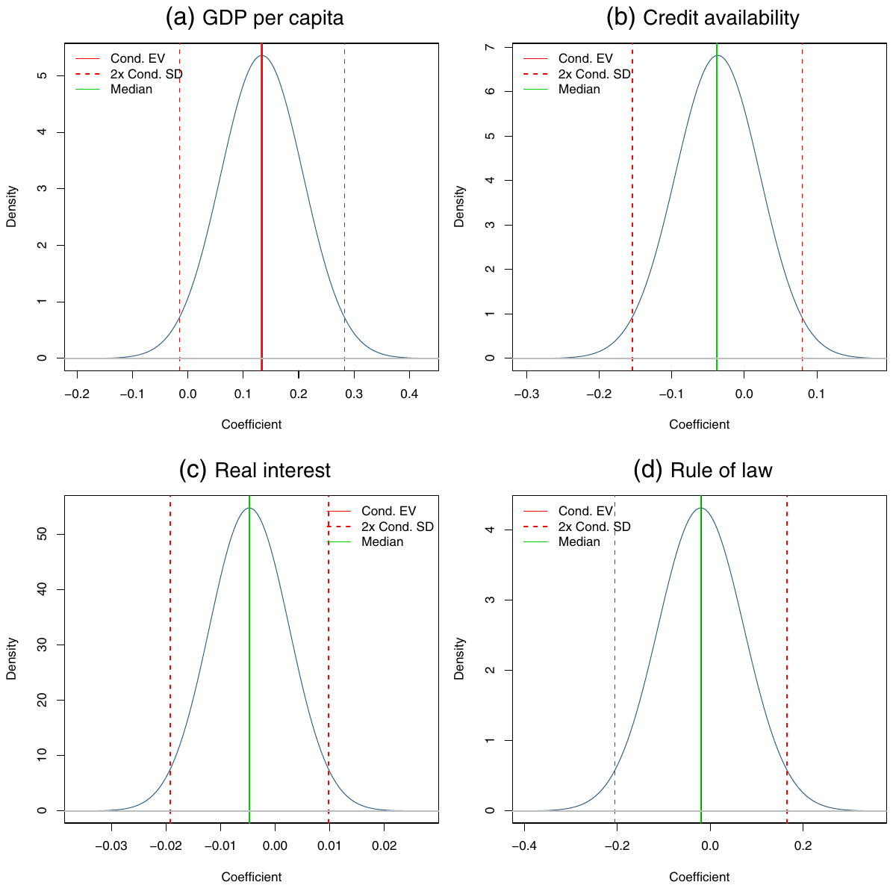
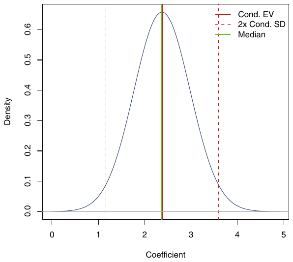
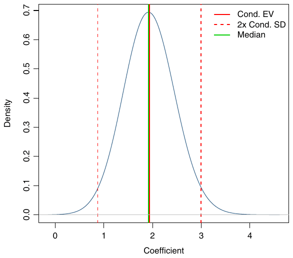
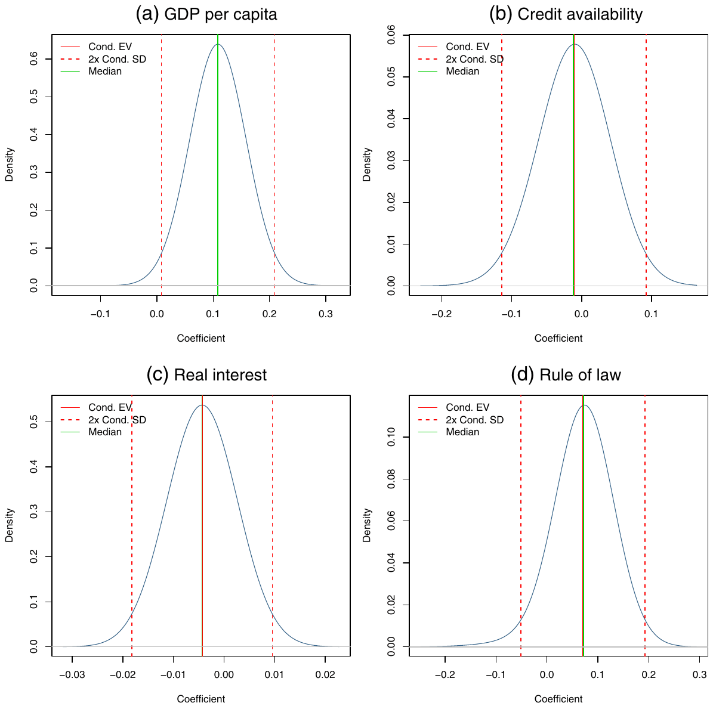

Cross-Country Heterogeneity in Intertemporal Substitution
Tomas Havranek, Roman Horvath, Zuzana Irsova, and Marek Rusnak (2015), "Cross-Country Heterogeneity in Intertemporal Substitution." Journal of International Economics 96(1), 100-118. https://doi.org/10.1016/j.jinteco.2015.01.012.
Tomas Havraneka,b,* | Roman Horvathb,c | Zuzana Irsovab | Marek Rusnaka,b
aCzech National Bank, Czech Republic
bCharles University, Prague, Czech Republic
cIOS, Regensburg, Germany
Corresponding author at: Czech National Bank, Czech Republic. E-mail address: tomas.havranek@ies-prague.org (T. Havranek).
An online appendix with data, code, and a list of studies included in the meta-analysis is available at meta-analysis.cz/substitution.
We thank Jan Babecky, Michal Bauer, Iftekhar Hasan, Fabrizio Perri, Jiri Schwarz, Anna Sokolova, seminar participants at CERGE-EI and the Czech National Bank, and two anonymous referees of the Journal of International Economics for their helpful comments. Havranek, Horvath, and Rusnak acknowledge support from the Czech Science Foundation (grant #15-02411S); Irsova acknowledges support from the Czech Science Foundation (grant #P402/11/0948). The views expressed here are ours and not necessarily those of the Czech National Bank.
Article history Received 22 January 2014; Received in revised form 19 January 2015; Accepted 20 January 2015; Available online 17 February 2015
JEL classification C83; D91; E21
Abstract
We collect 2735 estimates of the elasticity of intertemporal substitution in consumption from 169 published studies that cover 104 countries during different time periods. The estimates vary substantially from country to country, even after controlling for 30 aspects of study design. Our results suggest that income and asset market participation are the most effective factors in explaining the heterogeneity: households in rich countries and countries with high stock market participation substitute a larger fraction of consumption intertemporally in response to changes in expected asset returns. Micro-level studies that focus on sub-samples of rich households or asset holders also find systematically larger values of the elasticity.
Keywords: Elasticity of intertemporal substitution, Consumption, Meta-analysis, Bayesian model averaging
1. Introduction
The elasticity of intertemporal substitution in consumption (EIS) reflects households' willingness to substitute consumption between time periods in response to changes in the expected real interest rate. Therefore it represents a crucial parameter for a wide range of economic models involving intertemporal choice, from modeling the behavior of aggregate savings and the impact of fiscal policy to computing the social cost of carbon emissions, and has been estimated by hundreds of researchers. Fig. 1 illustrates how the elasticity matters for the modeled effects of monetary policy: we use the popular model of Smets and Wouters (2007), vary the calibrated value of the EIS, and for different values of the EIS plot the impulse responses of consumption and investment to a one-percentage-point monetary policy shock. It is apparent that the modeled development of these aggregates depends strongly on the value of the elasticity of intertemporal substitution.
The figure shows impulse responses for the EIS calibrated between 0.1 and 1.5, and in the literature we indeed encounter such large differences in calibrations of the elasticity. The most cited empirical study estimating the elasticity, Hall (1988), who concludes that the EIS is not likely to be larger than 0.1, has influenced many researchers. Some studies use a value of 0.2 (Chari et al., 2002; House and Shapiro, 2006; Piazzesi et al., 2007), or a value of 0.5 (Jin, 2012; Trabandt and Uhlig, 2011; Rudebusch and Swanson, 2012), or a value of 2 (Ai, 2010; Barro, 2009; Colacito and Croce, 2011), to name but a few recent examples of different calibrations. The reason for the different calibrations is differences in the results of empirical studies on the EIS. For example, the standard deviation of the estimates reported by the 33 studies in our sample which were published in the top five general interest journals is 1.4, outliers excluded. Most commentators would agree with Ai (2010, p. 1357), who starts his discussion of calibration by noting that “empirical evidence on the magnitude of the EIS parameter is mixed.”
In this paper we collect 2735 estimates of the elasticity of intertemporal substitution reported in 169 studies and review the literature quantitatively using meta-analysis methods. Meta-analysis, which has been employed in economics by Card and Krueger (1995), Ashenfelter et al. (1999), Disdier and Head (2008), Havranek and Irsova (2011), Chetty et al. (2011), and Rusnak et al. (2013), among others, allows us to examine systematically the influence of methodology on the results. In this framework we can address the challenge put forward by an early survey of the empirical evidence from consumption Euler equations (Browning and Lusardi, 1996, p. 1833): “It is frustrating in the extreme that we have very little idea of what gives rise to the different findings. (…) We still await a study which traces all of the sources of differences in conclusions to sample period; sample selection; functional form; variable definition; demographic controls; econometric technique; stochastic specification; instrument definition; etc.”

While controlling for differences in methodology, we focus on explaining country-level heterogeneity. The studies in our sample provide us with estimates of the EIS for 104 countries, and we show that the mean values reported for the countries vary substantially. We build on the literature that explores the heterogeneity in the EIS at the micro level. For example, Blundell et al. (1994) and Attanasio and Browning (1995) suggest that rich households tend to show a larger elasticity of intertemporal substitution, and we examine whether GDP per capita is associated with the mean EIS reported for the country. Mankiw and Zeldes (1991) and Vissing-Jorgensen (2002) find a larger elasticity for stockholders than for non-stockholders, and we explore the relationship between stock market participation and the elasticity of intertemporal substitution at the country level. Bayoumi (1993) and Wirjanto (1995), among others, indicate that liquidity-constrained households show a smaller EIS, and we examine whether ease of access to credit helps explain the cross-country variation in the elasticity. More details on factors potentially causing heterogeneity in the EIS are available in Section 3.
The mean estimate of the elasticity of intertemporal substitution reported in empirical studies is 0.5, but we show that cross-country differences are important. Since it is often unclear which aspects of methodology should matter for the magnitude of the estimated EIS, we include all 30 that we collect and employ Bayesian model averaging (Raftery et al., 1997) to deal with the resulting model uncertainty. Our findings suggest that a larger EIS is associated with higher per capita income of the country, and especially with higher stock market participation. According to our baseline model, a 10-percentage-point increase in the rate of stock market participation is associated with an increase in the EIS of 0.24. Moreover, wealth and asset market participation are also important at the micro level: studies estimating the EIS using a sub-sample of rich households or asset holders find on average an EIS larger by 0.21.
The remainder of the paper is structured as follows. Section 2 explains how we collect data from studies estimating the elasticity. Section 3 discusses the reasons for including variables that may explain the differences in the reported estimates of the EIS. Section 4 describes the results, while Section 5 provides robustness checks. Appendix A lists mean values of the EIS reported for various countries and summary statistics of all variables used in our analysis. Appendix B shows posterior coefficient densities for an alternative specification of our model. Appendix C provides diagnostics on Bayesian model averaging. An online appendix with data, code, and a list of studies included in the meta-analysis is available at meta-analysis.cz/substitution.
2. Estimates of the elasticity
To estimate the EIS, researchers often follow Hall (1988) and use the log-linearized consumption Euler equation. That is, they regress consumption growth on the intertemporal price of consumption, the real rate of return:
Here denotes consumption growth at time , denotes the real return on asset at time (for instance the stock market or treasury bill return), and denotes the error term. The error term is correlated with , and researchers thus use instruments for , typically including the values of asset returns and consumption growth known at time . There are of course many potential modifications to Eq. (1), many ways in which it can be estimated, and different data that can be used in the estimation; we discuss these issues in detail in Section 3 and control for the context in which researchers obtain their estimates.
The first and crucial stage of meta-analysis is the selection of primary studies. We start with an extensive search in Google Scholar (the search query and the list of studies are available in the online appendix). There are thousands of papers on the topic, so a good query is needed to identify studies that are likely to contain empirical estimates of the EIS. We adjust our query until it returns most of the well-known empirical papers among the top 50 hits. For the selection of studies we prefer Google Scholar to other databases commonly used in meta-analysis, such as EconLit or Scopus, because Google Scholar provides powerful fulltext search.
The search yields about 1500 hits in total, but on closer examination we find that papers identified in the bottom half of the search list are unlikely to contain usable empirical estimates of the EIS. We read the abstracts of the first 700 papers to see which can be included in the meta-analysis, and it seems that more than 300 studies contain usable estimates of the EIS. At this point it is clear that to capture the context in which researchers obtain the estimates we have to collect about 30 variables reflecting methodology. Since a typical study (especially a typical working paper) reports many different estimates (using different sets of instrumental variables, for example), we find it unfeasible to include all studies and decide to focus on published studies only and read these studies in detail. An alternative solution is to select just one representative estimate from each study, published or unpublished, and discard the other estimates, but often it is unclear what the preferred estimate would be. We stop the search on January 1, 2013, and identify 169 published studies that provide estimates of the EIS and detailed information on methodology.
Aside from saving us several months of work, the restriction of the sample to published studies has two additional benefits. First, publication status is a simple indicator of quality because published studies are peer-reviewed. Second, published papers are typically better written and typeset, which makes the collection of data easier and reduces the danger of mistakes. But even when we focus solely on published papers, we have to collect about 80,000 data points by hand (the published literature provides 2735 estimates of the EIS and for each we collect 30 aspects of methodology). Two of the co-authors, therefore, collect the data simultaneously and check the resulting data set for errors. The final database used in the paper is available in the online appendix. Judging from the surveys of meta-analyses by Nelson and Kennedy (2009) and Doucouliagos and Stanley (2013) we believe this paper is the largest meta-analysis conducted in economics so far.
Out of the 169 studies included in the meta-analysis, 33 are published in the top five journals in economics, which underlines the importance of the EIS and the amount of research dedicated to its estimation. All studies combined receive on average more than two thousand citations per year in Google Scholar, which indicates that the estimates are heavily used. Our sample includes studies published over three decades: from 1981 to 2012; the median study uses data from 1970 to 1994 and provides 8 estimates of the elasticity. The estimates span 104 different countries, even though about half of all estimates are computed for the US. The mean reported estimate of the EIS is 0.5—for this and all other computations we exclude estimates that are larger than 10 in absolute value (2.5% of the data). Such large estimates seem implausible, but the threshold is arbitrary. In Section 5 we explain that the choice of threshold does not affect our results much. Finally, when each study is given the same weight (as opposed to each estimate being given the same weight), the mean EIS is 0.7. This is close to, for example, the baseline calibration of 2/3 used by Smets and Wouters (2007).
But the worldwide mean represents a poor guide for the calibration of the EIS in most countries, as Fig. 2 illustrates (numerical values for the countries are provided in Table A1 in the Appendix). The estimated EIS differs a lot across countries, typically lying between 0 and 1. Such heterogeneity can make a big difference to the modeled effectiveness of monetary policy, among other things, as we showed in Fig. 1. For some countries only a handful of estimates are available, so some of the country averages we report may be quite imprecise and influenced by the estimation method. Nevertheless, for six countries we have more than 50 estimates (the least covered of these countries is Sweden, with 63 estimates reported in 11 studies). Among these countries we find the largest EIS for Japan (0.9), followed by the US (0.6), the UK (0.5), Canada (0.4), Israel (0.2), and Sweden (0.1). The cross-country heterogeneity in the estimated EIS is substantial and calls for an explanation.
When looking for the sources of cross-country heterogeneity, however, it is also important to take into account that researchers employ different methods to estimate the EIS. Fig. 3 shows how the reported EIS differs across studies even if it is estimated for the same country. For illustration we select Japan, which is the third most often examined country in the literature (after the US and the UK). Dozens of studies estimate the elasticity for the US and the UK and it would be difficult to squeeze them into a box plot, but the conclusion would be the same even for these countries. We see that individual studies report very different estimates and often the within-study distributions of the estimates do not overlap. Therefore, in all the estimations we also control for the methodology employed by the researchers.


A crucial aspect of methodology is whether the authors rely on micro or macro data. As we discuss in the next section, many researchers have suggested that the use of micro data is more appropriate for the identification of the elasticity of intertemporal substitution. Nevertheless, micro data are difficult to obtain, and therefore 80% of the studies in our sample rely on macroeconomic time series. For many countries, micro data sets on consumption and rates of return are virtually non-existent, and it is only for the US and the UK that we have multiple micro-level studies in our sample. For these two countries, micro estimates are larger than macro estimates: 0.9 vs. 0.5 in the case of the US and 0.7 vs. 0.4 in the case of the UK. Within micro-level studies, there are two basic approaches to the identification of the EIS. The first one focuses on the cross-sectional variation in the rate of return, while the other typically uses cohort-mean data and relies on time series variation. The cross-sectional approach is prevalent for US micro data and yields smaller estimates of the elasticity (0.8 vs. 1.3); in contrast, the time-series approach is more commonly applied to the UK data and also produces smaller estimates (0.5 vs. 3.2). Therefore, at first sight the effect of these two approaches on the results is ambiguous, and we proceed to examining these and other potential relations between study design and study conclusions more formally in the next sections.
3. Why do the estimates differ?
We consider five country characteristics that may influence the reported magnitude of the EIS:
Income. Most studies examining heterogeneity in the EIS focus on the role of income. The hypothesis states that poor consumers substitute less consumption intertemporally because their consumption bundle contains a larger share of necessities, which are more difficult to substitute between time periods compared with luxury goods. Moreover, if subsistence requirements represent an important portion of the poor's consumption, the poor have limited discretion for intertemporal substitution in consumption. This hypothesis has been supported by analyses of micro data (for example, Blundell et al., 1994; Attanasio and Browning, 1995), as well as cross-country data (Atkeson and Ogaki, 1996; Ogaki et al., 1996). We use GDP per capita to capture the differences in income across countries.
Asset market participation. We expect households participating in asset markets to be more willing to substitute consumption intertemporally. Exposure to the stock market, for example, may be correlated with households' awareness of the payoffs from intertemporal substitution and, in general, with the forward-looking nature of their consumption. Moreover, Attanasio et al. (2002) and Vissing-Jorgensen (2002) argue that consumption Euler equations are not valid for households not participating in the corresponding asset market, and find larger estimates of the EIS for stockholders and bondholders compared with households that do not own these assets. Similarly, Mankiw and Zeldes (1991) find a larger EIS for stockholders than for other households. To capture this country characteristic we use the database of stock market participation developed by Giannetti and Koskinen (2010).
Liquidity constraints. Liquidity-constrained households have less opportunities for intertemporal substitution in consumption (Wirjanto, 1995). The resulting consumption of liquidity-constrained households may be linked to income, as it is for the rule-of-thumb consumers of Campbell and Mankiw (1989), and lacks the forward-looking element of the response to the expected real rate of return. Bayoumi (1993), for example, finds that financial deregulation in the UK brought a substantial increase in the proportion of households with a positive EIS. Attanasio (1995) provides a survey of the literature on the effects of liquidity constraints on intertemporal consumption choice. To capture liquidity constraints we use two alternative measures: credit availability defined as the ease of access to loans and reported by the Global Competitiveness Report, and a measure of financial reform reported by the IMF (Abiad et al., 2010).
Asset return. Almost all estimations and applications of the EIS assume the elasticity to be constant with respect to the rate of return of the asset in question. In a recent paper, however, Crossley and Low (2011) reject the hypothesis of a constant EIS. To see whether the estimated EIS differs systematically for countries with different returns, we include a measure of the real interest rate defined as the lending rate adjusted for inflation as measured by the GDP deflator.
Culture and institutions. The willingness of households to substitute consumption into an uncertain future may be associated with culture and institutions. For example, Porta et al. (1998) suggest that institutions have an important influence on financial decisions.
It has also been found that trust, or social capital more generally, is an important factor for stock market participation and financial development (Guiso et al., 2004, 2008). Moreover, a large cross-country survey on time discounting and risk preferences (Wang et al., 2011; Rieger et al., 2011) shows the importance of cultural differences. To capture the economic culture of the country we use two measures: the rule of law index (taken from the World Bank Global Governance Indicators), which captures the extent to which people have confidence in the rules of society, and the index of generalized trust in society (Bjoernskov and Meon, 2013).
A detailed description and summary statistics for each variable used in our analysis are reported in Table A2 in the Appendix. A few difficult issues of data collection are worth discussing at this point. First, some variables are not available for all 104 countries in our data set. Data on stock market participation are available for only 28 countries, which we call “core countries” in the analysis, and we also conduct a separate set of regressions without the variable on stock market participation (and, therefore, using almost all countries in the data set). Second, a few estimates of the EIS use data from several countries; for example, the euro area. We keep such estimates in the data set and compute average values of the corresponding country-level characteristics. Third, different studies use data from different time periods to estimate the EIS. Whenever possible, we compute the average of the country characteristic corresponding to the data period. For example, if a study uses data from 1980 to 1994, we use the average value of the real interest rate of that period. This adjustment significantly increases the variation in country-level variables.
We also consider 30 variables reflecting the different aspects of methodology used to estimate the EIS. For ease of exposition we divide these method choices into variables reflecting the definition of the utility function (5 aspects), data characteristics (6 aspects), general design of the analysis (7 aspects), the definition of main variables (4 aspects), estimation characteristics (4 aspects), and publication characteristics (4 aspects).
Utility function. An important feature of studies estimating the EIS is whether the elasticity is separated from the coefficient of relative risk aversion. Only about 5% of all the estimates in our sample estimate the parameters separately, usually employing the utility function put forward by Epstein and Zin (1989). Habits in consumption are assumed by 4% of researchers. Some studies allow for non-separability between durables and non-durables (4% of estimates), following Ogaki and Reinhart (1998), who argue that assuming separability can produce a downward bias in the estimate of the elasticity. A similar fraction of studies allow for non-separability between private and public consumption, while 5% of studies allow for non-separability between tradable and non-tradable goods.
Data. The studies differ greatly in the number of cross-sectional units (usually households or countries) used in the estimation and in the length of the time span of the data. We also include a variable reflecting the average year of the data period to see whether there is a trend in the estimated EIS over time. We include a dummy variable for studies using micro data (about 20% of our data set). Many authors (for example, Attanasio and Weber, 1993) argue that estimating Euler equations on macro data can lead to biased results because of the omission of demographic factors. Moreover, we include dummy variables reflecting the frequency of the data used for the estimation. Most studies use quarterly data (57%); some employ monthly data (10%). Annual data are typically used by micro studies.
Design. We include a dummy variable for micro studies that rely on time-series variation and use synthetic cohort data (about 5% of our data set). Next, most authors assume a time-additive utility function, which results in the EIS being equal to the inverse of the coefficient of relative risk aversion. Some studies focusing on risk preferences regress asset returns on consumption growth and report the inverse of the EIS (almost a third of all the studies in our data set). Nevertheless, Campbell (1999) notes that using the asset return as the response variable may aggravate the problem of weak instruments in estimating the parameter. To see whether this method choice has a systematic effect on the results, we include a dummy variable called Inverse estimation.
As we noted earlier, some micro studies on the EIS explore potential heterogeneity in the parameter; they typically estimate the elasticity for different subsets of households. The definition of subsets differs, but researchers usually ask whether richer households or households participating in asset markets show a larger elasticity of intertemporal substitution. To capture this effect we include a dummy variable Asset holders. Next, Campbell and Mankiw (1989), among others, show that because of the time aggregation of consumption the instrument set for asset returns should not contain first lags of variables. But still about 30% of all the estimates are computed using first lags of variables among the instruments.
Gruber (2006) stresses that studies using micro data should include year fixed effects for the identification to come from cross-sectional variation and not from time series variation correlated with consumption. Nevertheless, 3% of the studies in our data set use data from the Panel Study of Income Dynamics but do not include year fixed effects. About a quarter of the studies include a measure of income in the estimation to test for excess sensitivity of consumption to current or anticipated income, and we control for this aspect of methodology as well. We also include the number of demographic controls used in micro studies to explain household-level variation in consumption.
Variable definition. Most studies use non-durable consumption as the response variable, but some 20% of the estimates are computed using total consumption. About 6% of studies use food as a proxy for consumption, which according to Attanasio and Weber (1995) can produce biased estimates if food is not separable from other types of consumption. The asset return is typically defined as the interest rate on treasury bills, but almost 20% of studies use the stock market return. Mulligan (2002), however, explains that the rate of return should be measured as the return on a representative unit of capital, and we include a dummy variable for this aspect of methodology.
Estimation. We have noted that the log-linearized consumption Euler equation is the favorite framework for estimation of the EIS. But Carroll (2001), for example, criticizes the common practice on the grounds that higher-order terms may be endogenous to omitted variables in the regression resulting from the log-linear Euler equation. Thus we include a dummy variable for studies using the exact Euler equation to see whether log-linearization affects the estimates of the elasticity in a systematic way. Next, the regression parameters are typically estimated using GMM, but a third of studies use two-stage least squares, and 10% of studies disregard endogeneity and employ OLS.
Publication characteristics. Some novel methods are employed by only a few studies and their influence on the results cannot be examined in a meaningful way using meta-analysis. For this reason we also include variables reflecting the quality of studies not captured by the method variables introduced above. We include publication year to capture innovations in methodology, the number of citations of the study in Google Scholar, the recursive RePEc impact factor of the journal, and a dummy variable for studies published in the top five general interest journals in economics. The data on citations and impact factors were collected on January 31, 2013.
4. Meta-regression analysis
Our intention is to explore whether the country characteristics described in the previous section are associated with the reported EIS, but also to control for the type of methodology used in the studies. That is, we employ the following “meta-regression”:
The problem is that there are 30 method variables and it is not clear which ones should be included. We cannot include all of them in an OLS regression because the specification would contain many redundant variables. Some meta-analysts use sequential t-tests to exclude the least significant variables, but such an approach is not statistically valid. In this paper we opt for a technique designed to tackle such regression model uncertainty: Bayesian model averaging (BMA). BMA runs many regressions with different subsets of the explanatory variables on the right-hand side and then constructs a weighted average over these regressions (aside from a robustness check, we always include the country-level variables in all BMA regressions). For applications of BMA in economics, see, for instance, Fernandez et al. (2001), Ciccone and Jarocinski (2010), and Moral-Benito (2012). Because model uncertainty is inevitable in meta-analysis (it is usually unclear whether some aspects of methodology could influence the results in a systematic way, and the potential aspects are many), BMA has also been frequently used in this field (Moeltner and Woodward, 2009; Irsova and Havranek, 2013; and Havranek and Rusnak, 2013).
Bayesian model averaging is described in detail by Feldkircher and Zeugner (2009), for instance, and here we only give intuition for the technical terms needed for the evaluation of the results. The weights used in the BMA estimation are called posterior model probabilities and capture how well individual regressions fit the data—thus the weights are analogous to adjusted R-squared or information criteria used in frequentist econometrics. For each variable the sum of the posterior probabilities of models in which the variable is included indicates the so-called posterior inclusion probability (PIP), which is analogous to statistical significance. If the posterior inclusion probability of a variable is close to one, almost all models that are effective in explaining the variance in the reported EIS include that variable. According to the rule of thumb proposed by Jeffreys (1961) and refined by Kass and Raftery (1995), the evidence of a regressor having an effect is weak, positive, strong, or decisive if the PIP lies between 0.5–0.75, 0.75–0.95, 0.95–0.99, and 0.99–1, respectively. BMA provides us with a large number of regressions, and from these we can compute for each variable the posterior coefficient distribution. The posterior coefficient distribution gives us the posterior mean (analogous to the estimate of a regression coefficient) and posterior standard deviation (analogous to the standard error of an estimated regression parameter).
Because we have 30 method variables, there are potential regressions with different combinations of the method variables. To compute all these regressions would take several weeks, so we opt for the Metropolis–Hasting algorithm, a Markov chain Monte Carlo method. The Metropolis–Hastings algorithm walks through the most important part of the model mass—the models with high posterior model probabilities. For all BMA estimations we use one million burn-ins and two million iterations to ensure a good degree of convergence. We employ the beta-binomial prior advocated by Ley and Steel (2009): the prior model probabilities are the same for all possible model sizes. We set the Zellner's g-prior following Fernandez et al. (2001). These priors are quite conservative and reflect the fact that we know little about the true model size and parameter signs. In the next section, however, we check if our results are robust to a different choice of priors. All of the computations are performed using the R package bms available at bms.zeugner.eu. Codes for all our estimations are available in the online appendix.
In the baseline specification we prefer to include the country characteristics into all models (but also provide a robustness check where country and method variables are treated symmetrically and show that the results are similar). In other words, we impose the prior that the five country-level variables belong to the correct model for the explanation of the elasticity of intertemporal substitution. Our reasons for choosing this approach are threefold. First, the explanation of the country-level heterogeneity in the EIS is the main focus of this paper, and we want to see how stable the estimated coefficients are when we include different subsets of method variables. Second, in the previous section we show that for each country-level variable the literature provides a good reason why the variable should matter for the EIS. In contrast, for many variables capturing methodology it is difficult to find a theory that could say something about their potential effects on the elasticity, but we still prefer to control for as many method variables as possible. Third, our approach mirrors the typical practice of sensitivity checks in frequentist econometrics, when different control variables are included in the baseline model (which is usually supported by theory) to see whether the results hold.
In our first BMA estimation we do not include stock market participation, which is available for only 28 countries, and use data for as many countries as possible. The estimation is illustrated in Fig. 4. The columns in the figure denote individual models; the variables are sorted by posterior inclusion probability in descending order. A blue cell (darker in grayscale) implies that the variable is included and its estimated sign is positive. A red color (lighter in grayscale) implies that the variable is included and the estimated sign is negative. Blank cells imply that the corresponding variable is not included in the model. Only the 5000 models with the highest posterior model probabilities are shown, but we can see that they capture almost all of the cumulative model probabilities.
The best models in terms of posterior probabilities are depicted on the left. The very best one includes only 9 out of the 30 method variables at our disposal; the variables included are inverse estimation, top journal, stock return, total consumption, OLS, no. of years, asset holders, exact Euler, and capital return. Monthly data is not included in the best model, but it belongs to most of the other good models. All other method variables have posterior inclusion probabilities below 0.5, which indicates that they do not matter much for the magnitude of the estimated elasticity (have less than a “weak” effect on the EIS according to the classification by Kass and Raftery, 1995). Concerning the country-level variables (which are included in all models), we can see that GDP per capita and credit availability have the same estimated influence on the EIS no matter what method variables are included. In contrast, the estimated signs for real interest and rule of law are unstable and depend on the specification of the model.
The numerical results of the BMA estimation are summarized in Table 1. For each variable we report the estimated posterior mean for the regression parameter and the corresponding posterior standard deviation together with the posterior inclusion probability (for country-level variables the posterior inclusion probability is one by definition). In the right-hand part of the table we report the results of the frequentist check of our BMA estimation; that is, we also run a simple OLS. In the OLS we only include variables that appear to have at least a weak effect on the EIS in the BMA exercise (those with posterior inclusion probabilities above 0.5) and cluster the standard errors at the country level. We can see that the results of the frequentist check are very similar to the BMA results. Diagnostics of the BMA estimation are available in Table A3 and Fig. A3 in the Appendix.

Concerning method variables, our results suggest that the definition of the utility function does not affect the reported estimates of the EIS in a systematic way. On the other hand, we find that certain aspects of the data are important: namely, that studies using longer time series report smaller estimates of the elasticity of intertemporal substitution and that monthly frequency of data is associated with larger estimates. Both results have important implications and are in line with the previous literature discussing the role of methodology. First, Attanasio and Low (2004) stress that for obtaining consistent estimates of the elasticity with micro data it is important to use sufficiently long time series. When identification comes mostly from the cross-sectional variation, the estimates might be biased, which is also documented by Carroll (2001).1 Second, Bansal et al. (2012) show that a difference between the actual decision frequency of consumers and the sampling frequency available to the econometrician can create a substantial bias. If the decision frequency is approximately monthly, as estimated by Bansal et al. (2012), lower sampling frequencies will yield estimates of the EIS biased downwards, which is consistent with our results.
An important aspect of study design is whether the EIS is estimated directly in a regression with consumption growth as the response variable or if the inverse of the EIS is estimated in a regression where asset return is on the left-hand side. In the latter case the implied elasticity tends to be larger on average by 0.5, which is a significant difference considering that the mean of all the reported estimates is 0.5 and the practical relevance of such changes of the EIS is large, as illustrated in Fig. 1. If good instruments for consumption growth are harder to find than instruments for the rate of return (as mentioned, among others, by Campbell, 1999), the inverse estimation aggravates the problem of weak instruments in the identification of the EIS and leads to less reliable results.
When the elasticity of intertemporal substitution is estimated for a sub-sample of rich households or stockholders, the estimate tends to be substantially larger as well: by 0.35. Thus poor households and non-asset holders seem to display a significantly smaller EIS, which is in line with Mankiw and Zeldes (1991), Blundell et al. (1994), and Vissing-Jorgensen (2002), among others. The definitions of the two main variables in the consumption Euler equations—consumption and asset return—are important as well. When total consumption is used instead of non-durable consumption, the study is likely to find a larger EIS. The results are consistent with Mankiw (1985), who finds a larger EIS for durable consumption than for non-durable consumption. Next, our results suggest that the use of bond returns as the measure of asset returns, in contrast to the use of stock returns or returns on a unit of capital, is associated with a larger reported EIS.
Studies that estimate the exact consumption Euler equation (that is, studies that do not use log-linear approximation) usually report a larger elasticity. Failure to acknowledge endogeneity when regressing consumption growth on asset returns results in substantial overestimation of the EIS: by about 0.4. Finally, our results also indicate that studies published in the top five general interest journals in economics tend to report estimates of the EIS larger by 0.5 compared with studies published in other journals. The difference may reflect aspects of quality that are not captured by the other variables we collected. Papers published in top journals often present novel methodology, and method aspects that have only been used by a few studies are difficult to examine in a meta-analysis framework.
The country-level variables, which are the main focus of our paper, are included in all the regressions, so for these variables the posterior inclusion probabilities reported in Table 1 are not informative. Instead we need to look at the posterior distribution of the regression coefficients reported in Fig. 5.2 From the figure we can see that the estimated regression parameters for credit availability, real interest, and rule of law are close to zero. The dashed lines denote values that lie two standard deviations from the mean of the estimated regression parameter; therefore, they can be interpreted as analogous to 95% confidence intervals in frequentist econometrics. Even for GDP per capita the interval includes zero, but only marginally, which is analogous to borderline statistical significance at the 5% level. The frequentist check of BMA reported in Fig. 5 shows statistical significance at the 10% level (and p-values larger than 0.5 for the other three country-level variables). We conclude that there seems to be a positive association between income and the elasticity of intertemporal substitution; the economic significance of this association is examined at the end of this section.
| Response variable: estimate of the EIS | Bayesian model averaging Post. mean | Bayesian model averaging Post. std. dev. | Bayesian model averaging PIP | Frequentist check (OLS) Coef. | Frequentist check (OLS) Std. er. | Frequentist check (OLS) p-value |
|---|---|---|---|---|---|---|
| Country characteristics | ||||||
| GDP per capita | 0.134 | 0.074 | 1.000 | 0.126 | 0.084 | 0.138 |
| Credit availability | −0.037 | 0.059 | 1.000 | −0.033 | 0.055 | 0.553 |
| Real interest | −0.005 | 0.007 | 1.000 | −0.003 | 0.006 | 0.635 |
| Rule of law | −0.020 | 0.092 | 1.000 | −0.019 | 0.074 | 0.800 |
| Utility | ||||||
| Epstein–Zin | 0.018 | 0.074 | 0.069 | |||
| Habits | −0.004 | 0.032 | 0.021 | |||
| Nonsep. durables | 0.122 | 0.199 | 0.309 | |||
| Nonsep. public | −0.001 | 0.019 | 0.012 | |||
| Nonsep. tradables | 0.006 | 0.043 | 0.027 | |||
| Data | ||||||
| No. of households | 0.000 | 0.003 | 0.012 | |||
| No. of years | −0.201 | 0.055 | 0.982 | −0.196 | 0.048 | 0.000 |
| Average year | 0.015 | 0.940 | 0.012 | |||
| Micro data | 0.002 | 0.026 | 0.017 | |||
| Annual data | 0.000 | 0.008 | 0.010 | |||
| Monthly data | 0.160 | 0.167 | 0.531 | 0.263 | 0.090 | 0.004 |
| Design | ||||||
| Quasipanel | −0.015 | 0.068 | 0.059 | |||
| Inverse estimation | 0.530 | 0.067 | 1.000 | 0.512 | 0.137 | 0.000 |
| Asset holders | 0.349 | 0.181 | 0.849 | 0.421 | 0.089 | 0.000 |
| First lag instrument | 0.002 | 0.015 | 0.021 | |||
| No year dummies | −0.027 | 0.131 | 0.054 | |||
| Income | 0.000 | 0.008 | 0.011 | |||
| Taste shifters | 0.001 | 0.011 | 0.015 | |||
| Variable definition | ||||||
| Total consumption | 0.373 | 0.085 | 0.997 | 0.379 | 0.102 | 0.000 |
| Food | 0.051 | 0.147 | 0.141 | |||
| Stock return | −0.344 | 0.077 | 0.999 | −0.385 | 0.163 | 0.021 |
| Capital return | −0.207 | 0.148 | 0.723 | −0.288 | 0.077 | 0.000 |
| Estimation | ||||||
| Exact Euler | 0.219 | 0.131 | 0.792 | 0.283 | 0.244 | 0.250 |
| ML | −0.023 | 0.084 | 0.085 | |||
| TSLS | −0.006 | 0.035 | 0.043 | |||
| OLS | 0.420 | 0.111 | 0.984 | 0.440 | 0.119 | 0.000 |
| Publication | ||||||
| Publication year | 0.018 | 0.843 | 0.010 | |||
| Citations | −0.018 | 0.032 | 0.268 | |||
| Top journal | 0.482 | 0.085 | 1.000 | 0.442 | 0.074 | 0.000 |
| Impact | −0.001 | 0.005 | 0.025 | |||
| Constant | −0.579 | NA | 1.000 | −0.330 | 0.874 | 0.706 |
| Observations | 2526 | 2526 |
Notes: EIS = elasticity of intertemporal substitution. PIP = posterior inclusion probability. The reported moments of the BMA posterior distributions are unconditional on inclusion. Country characteristics are always included in all models of the BMA, so that their PIP equals one by definition. In the frequentist check we only include method characteristics with PIP >0.5. Standard errors in the frequentist check are clustered at the country level. More details on the BMA estimation are available in Table A3 and Fig. A3.

As a next step we add the variable stock market participation to the model, which reduces the number of countries to 28—the ones for which information on stock market participation is available—and we label them “core countries.” We are especially interested in the effect which the new variable has on the estimated EIS, but we also examine the robustness of our results compared with the case where data for all countries were included. Even though this new BMA estimation includes far fewer countries, it only loses about 270 observations, because most studies estimate the EIS using data from the core countries.
The results of the BMA estimation with stock market participation are reported in Table 2; more details and diagnostics are available in Table A4 and Fig. A4 in the Appendix. Concerning method characteristics, there are several changes compared with the estimation using all countries. First, it matters for the reported EIS whether the assumed utility function allows for non-separabilities between durable and non-durable consumption goods: allowing for non-separabilities is associated with larger estimated elasticities. Nevertheless, the variable has a posterior inclusion probability of only 0.54 and is not statistically significant in the frequentist check. Second, the posterior inclusion probability of the variable exact Euler drops to 0.29, so it seems to have little effect on the EIS when only the core countries are considered. Third, our results for the core countries suggest that highly cited studies report smaller estimates of the elasticity. But again, the corresponding variable has a posterior inclusion probability of only 0.6, suggesting a weak effect, and it is not significant in the frequentist check. Moreover, the posterior inclusion probability for this variable decreases below 0.5 when we exclude the most cited study, Hall (1988), who reports small estimates.
| Response variable: Estimate of the EIS | Bayesian model averaging Post. mean | Bayesian model averaging Post. std. dev. | Bayesian model averaging PIP | Frequentist check (OLS) Coef. | Frequentist check (OLS) Std. er. | Frequentist check (OLS) p-value |
|---|---|---|---|---|---|---|
| Country characteristics | ||||||
| Stock market partic. | 2.376 | 0.607 | 1.000 | 2.221 | 0.542 | 0.000 |
| GDP per capita | 0.080 | 0.137 | 1.000 | 0.116 | 0.138 | 0.405 |
| Credit availability | −0.008 | 0.094 | 1.000 | −0.003 | 0.122 | 0.982 |
| Real interest | 0.005 | 0.022 | 1.000 | 0.010 | 0.024 | 0.680 |
| Rule of law | −0.283 | 0.193 | 1.000 | −0.296 | 0.206 | 0.163 |
| Utility | ||||||
| Epstein–Zin | 0.036 | 0.110 | 0.115 | |||
| Habits | −0.004 | 0.034 | 0.019 | |||
| Nonsep. durables | 0.240 | 0.244 | 0.540 | 0.471 | 0.276 | 0.100 |
| Nonsep. public | 0.000 | 0.015 | 0.009 | |||
| Nonsep. tradables | 0.004 | 0.042 | 0.016 | |||
| Data | ||||||
| No. of households | −0.001 | 0.005 | 0.022 | |||
| No. of years | −0.248 | 0.059 | 0.996 | −0.226 | 0.059 | 0.001 |
| Average year | −0.025 | 0.860 | 0.010 | |||
| Micro data | −0.001 | 0.022 | 0.015 | |||
| Annual data | 0.001 | 0.012 | 0.012 | |||
| Monthly data | 0.141 | 0.166 | 0.506 | 0.326 | 0.054 | 0.000 |
| Design | ||||||
| Quasipanel | −0.107 | 0.191 | 0.273 | |||
| Inverse estimation | 0.575 | 0.073 | 1.000 | 0.598 | 0.097 | 0.000 |
| Asset holders | 0.210 | 0.208 | 0.558 | 0.372 | 0.143 | 0.015 |
| First lag instrument | 0.002 | 0.019 | 0.022 | |||
| No year dummies | −0.007 | 0.066 | 0.021 | |||
| Income | −0.001 | 0.012 | 0.012 | |||
| Taste shifters | 0.000 | 0.008 | 0.010 | |||
| Variable definition | ||||||
| Total consumption | 0.416 | 0.103 | 0.993 | 0.409 | 0.142 | 0.008 |
| Food | 0.016 | 0.080 | 0.057 | |||
| Stock return | −0.322 | 0.097 | 0.974 | −0.358 | 0.158 | 0.032 |
| Capital return | −0.224 | 0.164 | 0.714 | −0.331 | 0.051 | 0.000 |
| Estimation | ||||||
| Exact Euler | 0.067 | 0.114 | 0.287 | |||
| ML | −0.022 | 0.082 | 0.086 | |||
| TSLS | −0.002 | 0.021 | 0.022 | |||
| OLS | 0.394 | 0.136 | 0.957 | 0.385 | 0.181 | 0.044 |
| Publication | ||||||
| Publication year | −0.074 | 1.288 | 0.012 | |||
| Citations | −0.052 | 0.048 | 0.595 | −0.089 | 0.055 | 0.117 |
| Top journal | 0.529 | 0.104 | 1.000 | 0.567 | 0.103 | 0.000 |
| Impact | 0.000 | 0.004 | 0.016 | |||
| Constant | 0.892 | NA | 1.000 | −0.220 | 1.427 | 0.878 |
| Observations | 2254 | 2254 |
Notes: EIS = elasticity of intertemporal substitution. PIP = posterior inclusion probability. The reported moments of the BMA posterior distributions are unconditional on inclusion. Country characteristics are always included in all models of the BMA, so that their PIP equals one by definition. In the frequentist check we only include method characteristics with PIP >0.5. Standard errors in the frequentist check are clustered at the country level. More details on the BMA estimation are available in Table A4 and Fig. A4.
Concerning the country-level variables, in the new BMA estimation we find a smaller posterior mean for the coefficient corresponding to GDP per capita; the variable also loses statistical significance in the frequentist check. This raises a question whether income really is an important determinant of the EIS, or whether the effect identified in the estimation that uses data from all countries simply reflects the correlation between income and stock market participation: 0.54 in our sample. We believe that the estimation using data from core countries (the ones for which data on stock market participation is available) is not very informative about the influence of the remaining country-level variables on the EIS. A vast majority of the core countries are developed OECD economies, and they display similar values of GDP per capita (and also relatively similar values of the other three country characteristics, for which we nevertheless obtain similar results to the case with all countries). Therefore, in the sample of core countries the variable GDP per capita has little variation and cannot explain the observed differences in the EIS reported for different countries.
In contrast, the newly included stock market participation shows substantial variation across the core countries and is positively associated with the estimated elasticities, as we can see from Fig. 6. The regression parameter for this variable is positive in virtually all regressions in which the variable is included. Also, in the frequentist check the variable is highly statistically significant, with a p-value below 0.001. Our results thus suggest that households in countries with high stock market participation tend to be more willing or able to substitute consumption intertemporally.

But is the effect of stock market participation economically important? The estimated posterior mean for the regression coefficient corresponding to the variable is 2.4, so that an increase in stock market participation of 10 percentage points is associated with an increase in the EIS of 0.24; an important difference according to the simulation shown in Fig. 1. In Table 3 we compute what happens to the estimated elasticity if the value of a country-level characteristic changes from its sample minimum to its sample maximum (“maximum effect”) and if the value increases by one standard deviation (“standard-deviation effect”).
| Variable | Maximum effect | Std. dev. effect |
|---|---|---|
| Stock market partic. | 0.931 | 0.141 |
| GDP per capita | 0.683 | 0.088 |
| Credit availability | −0.119 | −0.020 |
| Real interest | −0.265 | −0.019 |
| Rule of law | −0.087 | −0.012 |
Notes: The table depicts the predicted effects of increases in the variables on the EIS estimates based on the BMA results (the specification with core countries for stock market participation; the specification with all countries for the other variables). Maximum effect = an increase from sample minimum to sample maximum. Std. dev. effect = a one-standard-deviation increase.
We have noted that the country-level variables other than stock market participation display relatively little variation for the sample of the core countries. Thus for variables GDP per capita, credit availability, real interest, and rule of law, we prefer to use the coefficients from the BMA estimation with all countries; for the variable stock market participation we have to take the value from the estimation with the core countries. Out of the five country-level variables, stock market participation has the largest effect, followed by GDP per capita.3 The other variables do not seem to matter much. The maximum effect of changes in stock market participation is a whopping 0.93; the standard-deviation effect is 0.14, which can also make a difference to the results of structural models, as shown in Fig. 1.
5. Robustness checks
In this section we evaluate the robustness of our findings by employing different variants of the BMA specification with the core countries—that is, including the variable stock market participation. First, we run a BMA estimation in which country-level variables are treated in the same way as method variables; in other words, different models may or may not include country-level variables, in contrast to the previous analysis, in which country-level variables were included in all models. Table 4 provides the results (here we do not report results for variables with posterior inclusion probability below 0.5, indicating less than a weak effect on the EIS), and more details and diagnostics are available in Table A5 and Fig. A5 in the Appendix.
| Response variable: estimate of the EIS | Bayesian model averaging Post. mean | Bayesian model averaging Post. std. dev. | Bayesian model averaging PIP | Frequentist check (OLS) Coef. | Frequentist check (OLS) Std. er. | Frequentist check (OLS) p-value |
|---|---|---|---|---|---|---|
| Stock market partic. | 1.775 | 0.736 | 0.917 | 2.128 | 0.613 | 0.002 |
| GDP per capita | 0.000 | 0.010 | 0.008 | 0.060 | 0.166 | 0.721 |
| Credit availability | −0.002 | 0.016 | 0.021 | 0.040 | 0.129 | 0.760 |
| Real interest | 0.000 | 0.002 | 0.008 | −0.004 | 0.026 | 0.879 |
| Rule of law | −0.013 | 0.062 | 0.053 | −0.290 | 0.238 | 0.234 |
| Inverse estimation | 0.563 | 0.078 | 1.000 | 0.535 | 0.146 | 0.001 |
| Top journal | 0.502 | 0.103 | 1.000 | 0.418 | 0.074 | 0.000 |
| Total consumption | 0.449 | 0.095 | 0.999 | 0.439 | 0.101 | 0.000 |
| No. of years | −0.255 | 0.056 | 0.999 | −0.232 | 0.050 | 0.000 |
| Stock return | −0.340 | 0.088 | 0.990 | −0.341 | 0.139 | 0.022 |
| OLS | 0.438 | 0.120 | 0.986 | 0.521 | 0.148 | 0.002 |
| Capital return | −0.231 | 0.160 | 0.735 | −0.282 | 0.054 | 0.000 |
| Asset holders | 0.277 | 0.210 | 0.694 | 0.404 | 0.115 | 0.002 |
| Exact Euler | 0.138 | 0.144 | 0.522 | 0.283 | 0.226 | 0.221 |
| Constant | 0.746 | NA | 1.000 | 0.105 | 1.634 | 0.950 |
| Observations | 2254 | 2254 |
Notes: PIP = posterior inclusion probability. The reported moments of the BMA posterior distributions are unconditional on inclusion. Country characteristics and method variables are treated in the same way in the BMA estimation. Results for method characteristics with PIP <0.5 are not reported. Standard errors in the frequentist check are clustered at the country level. More details on the BMA estimation are available in Table A5 and Fig. A5.
In this estimation the posterior inclusion probabilities for country-level variables are not necessarily 1, and indeed the probabilities for all variables except stock market participation are lower than 0.5, which means that these variables do not help us explain the variation in the reported elasticities once the characteristics of methodology are taken into account. In contrast, the posterior inclusion probability of stock market participation is 0.92, which would be characterized as borderline “positive” and “strong” in the guidelines for the interpretation of the posterior inclusion probability by Kass and Raftery (1995). Moreover, in the frequentist check the variable is statistically significant at the 1% level.
The regression parameter for stock market participation estimated by BMA is now lower than in the previous case, but still implies an important effect on the estimated EIS: an increase in stock market participation of 10 percentage points is associated with an increase in the estimated elasticity of 0.18. Concerning the method variables, the results of the robustness check are similar to the baseline case, where the country-level variables are included in all models, but a few differences emerge. First, the data frequency does not seem to be important for the estimated EIS when country and method variables are treated in the same way. Second, the results suggest that estimating the exact Euler equation, instead of the log-linearized version, tends to deliver larger elasticities—we reported the same finding for the BMA estimation with all countries (that is, excluding stock market participation). Third, according to this robustness check the number of study citations is not associated with the magnitude of the reported elasticity.
The second robustness check involves different priors for the BMA estimation. Now we use the priors that are advocated by Eicher et al. (2011) because they typically perform well in forecasting exercises: the unit information g-prior (the prior provides the same amount of information as one observation) and the uniform model prior (each model has the same probability). As we have noted, BMA runs many regressions with different combinations of the explanatory variables on the right-hand side and not all of the variables have to be included. It follows that models of size 15—the number of explanatory variables divided by two—are most common. If each model has the same probability, with the uniform model prior we implicitly impose the prior that the “true” model explaining the differences in the reported elasticities has 15 explanatory variables, which is apparent from Fig. A6 in the Appendix. That is why for the baseline estimation we prefer the random model prior, which gives each model size the same prior probability and reflects the fact that we know little ex ante about how many variables should be included in the model. The results of the robustness check are reported in Table 5 and for both country-level and method variables they are virtually identical to the baseline case.
| Response variable: estimate of the EIS | Bayesian model averaging Post. mean | Bayesian model averaging Post. std. dev. | Bayesian model averaging PIP | Frequentist check (OLS) Coef. | Frequentist check (OLS) Std. er. | Frequentist check (OLS) p-value |
|---|---|---|---|---|---|---|
| Stock market partic. | 2.328 | 0.598 | 1.000 | 2.221 | 0.542 | 0.000 |
| GDP per capita | 0.082 | 0.137 | 1.000 | 0.116 | 0.138 | 0.405 |
| Credit availability | −0.018 | 0.095 | 1.000 | −0.003 | 0.122 | 0.982 |
| Real interest | 0.007 | 0.022 | 1.000 | 0.010 | 0.024 | 0.680 |
| Rule of law | −0.258 | 0.192 | 1.000 | −0.296 | 0.206 | 0.163 |
| Inverse estimation | 0.594 | 0.070 | 1.000 | 0.598 | 0.097 | 0.000 |
| Top journal | 0.554 | 0.101 | 1.000 | 0.567 | 0.103 | 0.000 |
| Stock return | −0.345 | 0.081 | 0.998 | −0.358 | 0.158 | 0.032 |
| Total consumption | 0.416 | 0.098 | 0.998 | 0.409 | 0.142 | 0.008 |
| No. of years | −0.247 | 0.059 | 0.998 | −0.226 | 0.059 | 0.001 |
| OLS | 0.383 | 0.127 | 0.969 | 0.385 | 0.181 | 0.044 |
| Capital return | −0.305 | 0.128 | 0.921 | −0.331 | 0.051 | 0.000 |
| Asset holders | 0.294 | 0.192 | 0.771 | 0.372 | 0.143 | 0.015 |
| Citations | −0.067 | 0.045 | 0.762 | −0.089 | 0.055 | 0.117 |
| Nonsep. durables | 0.331 | 0.231 | 0.738 | 0.471 | 0.276 | 0.100 |
| Monthly data | 0.193 | 0.165 | 0.641 | 0.326 | 0.054 | 0.000 |
| Constant | 1.199 | NA | 1.000 | −0.220 | 1.427 | 0.878 |
| Observations | 2254 | 2254 |
Notes: PIP = posterior inclusion probability. The reported moments of the BMA posterior distributions are unconditional on inclusion. In this specification we employ the priors suggested by Eicher et al. (2011), who recommend using the uniform model prior (each model has the same prior probability) and the unit information prior (the prior provides the same amount of information as one observation). Results for method characteristics with PIP <0.5 are not reported. Standard errors in the frequentist check are clustered at the country level. More details on the BMA estimation are available in Table A6 and Fig. A6.
In the third robustness check we apply a hyper-g prior, which contrasts with g-priors with a fixed value of g used in our previous estimations (see, for example, Feldkircher and Zeugner, 2009, for more details). The implementation of the hyper-g prior that we use follows Liang et al. (2008). The hyperprior uses Bayesian updating to adjust the prior concerning g, and makes the posterior results more robust to different prior assumptions; a prominent example in this category is also Ley and Steel (2012). The results of the third robustness check are reported in Table 6. We obtain posterior means of regressions parameters that are very similar to those reported in the baseline case, but generally observe larger posterior inclusion probabilities for almost all variables (we have noted that in our setting the PIP of the country-level variables equals one by definition). The estimated inclusion probabilities imply that the effect of the following study aspects on the EIS can be classified as decisive (Kass and Raftery, 1995): the assumption of separability between durable and non-durable consumption goods, length of the time span of the data, inverse estimation, separate estimation of the EIS for asset holders, measurement of consumption, measurement of asset returns, and publication in a top journal.
| Response variable: estimate of the EIS | Bayesian model averaging Post. mean | Bayesian model averaging Post. std. dev. | Bayesian model averaging PIP | Frequentist check (OLS) Coef. | Frequentist check (OLS) Std. er. | Frequentist check (OLS) p-value |
|---|---|---|---|---|---|---|
| Stock market partic. | 2.122 | 0.573 | 1.000 | 2.277 | 0.546 | 0.000 |
| GDP per capita | 0.057 | 0.131 | 1.000 | 0.055 | 0.156 | 0.726 |
| Credit availability | −0.061 | 0.089 | 1.000 | −0.075 | 0.115 | 0.522 |
| Real interest | 0.009 | 0.021 | 1.000 | 0.009 | 0.021 | 0.665 |
| Rule of law | −0.157 | 0.183 | 1.000 | −0.154 | 0.200 | 0.448 |
| Epstein–Zin | 0.169 | 0.156 | 0.679 | 0.272 | 0.298 | 0.369 |
| Nonsep. durables | 0.401 | 0.137 | 0.997 | 0.450 | 0.271 | 0.109 |
| No. of years | −0.237 | 0.059 | 1.000 | −0.252 | 0.076 | 0.003 |
| Monthly data | 0.261 | 0.106 | 0.978 | 0.281 | 0.093 | 0.006 |
| Quasipanel | −0.318 | 0.196 | 0.880 | −0.339 | 0.144 | 0.027 |
| Inverse estimation | 0.568 | 0.063 | 1.000 | 0.626 | 0.083 | 0.000 |
| Asset holders | 0.376 | 0.119 | 1.000 | 0.406 | 0.118 | 0.002 |
| No year dummies | −0.387 | 0.289 | 0.773 | −0.540 | 0.093 | 0.000 |
| Total consumption | 0.399 | 0.095 | 1.000 | 0.429 | 0.183 | 0.027 |
| Food | 0.355 | 0.229 | 0.842 | 0.475 | 0.098 | 0.000 |
| Stock return | −0.329 | 0.073 | 1.000 | −0.350 | 0.141 | 0.020 |
| Capital return | −0.354 | 0.094 | 1.000 | −0.383 | 0.085 | 0.000 |
| ML | −0.167 | 0.150 | 0.699 | −0.220 | 0.071 | 0.005 |
| OLS | 0.271 | 0.116 | 0.962 | 0.301 | 0.165 | 0.080 |
| Citations | −0.073 | 0.031 | 0.969 | −0.084 | 0.065 | 0.207 |
| Top journal | 0.509 | 0.093 | 1.000 | 0.546 | 0.128 | 0.000 |
| Constant | 2.525 | NA | 1.000 | 0.498 | 1.715 | 0.774 |
| Observations | 2254 | 2254 |
Notes: PIP = posterior inclusion probability. The reported moments of the BMA posterior distributions are unconditional on inclusion. In this specification we employ the hyper-g prior suggested by Liang et al. (2008). Results for method characteristics with PIP <0.5 are not reported. Standard errors in the frequentist check are clustered at the country level. More details on the BMA estimation are available in Table A7 and Fig. A7.
In the fourth robustness check we use different proxies for liquidity constraints and institutions (Table 7). Instead of the measure of credit availability reported in the Global Competitiveness Report we now employ the measure of financial reform published by the IMF; instead of perceptions of the rule of law in society we employ the measure of generalized trust developed by Bjoernskov and Meon (2013). The result concerning stock market participation holds: the variable is positively and strongly associated with the elasticity of intertemporal substitution. The other variables are less important, even though GDP per capita and financial reform yield statistical significance at the 10% level in the frequentist check of the BMA estimation. Concerning the method variables, the results are close to the baseline case, with the exception of data frequency, which seems to be unimportant here, similarly to the first robustness check and the BMA estimation with all countries.
| Response variable: estimate of the EIS | Bayesian model averaging Post. mean | Bayesian model averaging Post. std. dev. | Bayesian model averaging PIP | Frequentist check (OLS) Coef. | Frequentist check (OLS) Std. er. | Frequentist check (OLS) p-value |
|---|---|---|---|---|---|---|
| Stock market partic. | 2.399 | 0.609 | 1.000 | 2.342 | 0.848 | 0.011 |
| GDP per capita | 0.137 | 0.142 | 1.000 | 0.198 | 0.114 | 0.095 |
| Financial reform | −0.692 | 0.307 | 1.000 | −0.777 | 0.394 | 0.060 |
| Real interest | 0.025 | 0.023 | 1.000 | 0.023 | 0.032 | 0.493 |
| Trust | −0.006 | 0.005 | 1.000 | −0.005 | 0.004 | 0.257 |
| Inverse estimation | 0.577 | 0.075 | 1.000 | 0.627 | 0.103 | 0.000 |
| Top journal | 0.543 | 0.104 | 1.000 | 0.602 | 0.114 | 0.000 |
| Total consumption | 0.423 | 0.100 | 0.996 | 0.416 | 0.147 | 0.009 |
| No. of years | −0.236 | 0.061 | 0.991 | −0.228 | 0.058 | 0.001 |
| OLS | 0.412 | 0.126 | 0.976 | 0.443 | 0.189 | 0.028 |
| Stock return | −0.303 | 0.101 | 0.961 | −0.299 | 0.136 | 0.037 |
| Asset holders | 0.299 | 0.211 | 0.728 | 0.406 | 0.130 | 0.005 |
| Citations | −0.063 | 0.049 | 0.682 | −0.093 | 0.057 | 0.119 |
| Capital return | −0.182 | 0.168 | 0.596 | −0.265 | 0.061 | 0.000 |
| Nonsep. durables | 0.257 | 0.247 | 0.570 | 0.465 | 0.273 | 0.101 |
| Constant | −0.440 | NA | 1.000 | −0.797 | 1.093 | 0.473 |
| Observations | 2254 | 2254 |
Notes: PIP = posterior inclusion probability. The reported moments of the BMA posterior distributions are unconditional on inclusion. In this specification we replace Credit availability with Financial reform and Rule of law with Trust. Results for method characteristics with PIP <0.5 are not reported. Standard errors in the frequentist check are clustered at the country level. More details on the BMA estimation are available in Table A8 and Fig. A8.
For all the analyses in this paper we have excluded estimates of the EIS larger than 10 in absolute value. It is necessary to deal with outliers because the inverse method of estimation used by some researchers can yield implausible estimates of the elasticity—even larger than 100 in absolute value. Because with the asset return on the left-hand side the researcher estimates the inverse of the EIS (the coefficient of relative risk aversion under the typical power utility), imprecise estimation may yield a coefficient close to zero and imply that the EIS is close to infinity. The threshold of 10 is arbitrary, but we get very similar results with the threshold set to 1, 5, 20, and 100. Moreover, the results are also similar when we include all estimates of the EIS and employ the robust estimator developed by Verardi and Croux (2009) for the frequentist check.4 In the fifth robustness exercise reported in the main body of this paper, Table 8, we use an alternative definition of outliers: we exclude the smallest and largest 2% of the estimates of the elasticity. The results are similar to those of the baseline specification, with several exceptions. In this robustness check the assumption of separability between durable and non-durable goods and the choice of sampling frequency do not have any effect on the resulting estimates of the EIS. In contrast to the baseline specification, estimating the exact (non-linearized) Euler equation seems to yield slightly larger elasticities, but the PIP of 0.53 suggests only a weak effect of this method choice on results.
| Response variable: estimate of the EIS | Bayesian model averaging Post. mean | Bayesian model averaging Post. std. dev. | Bayesian model averaging PIP | Frequentist check (OLS) Coef. | Frequentist check (OLS) Std. er. | Frequentist check (OLS) p-value |
|---|---|---|---|---|---|---|
| Stock market partic. | 1.678 | 0.523 | 1.000 | 1.534 | 0.724 | 0.036 |
| GDP per capita | 0.173 | 0.121 | 1.000 | 0.159 | 0.186 | 0.395 |
| Credit availability | 0.036 | 0.082 | 1.000 | 0.070 | 0.142 | 0.623 |
| Real interest | −0.017 | 0.019 | 1.000 | −0.018 | 0.023 | 0.448 |
| Rule of law | −0.256 | 0.167 | 1.000 | −0.280 | 0.252 | 0.269 |
| No. of years | −0.176 | 0.072 | 0.922 | −0.172 | 0.083 | 0.040 |
| Inverse estimation | 0.689 | 0.067 | 1.000 | 0.649 | 0.173 | 0.001 |
| Asset holders | 0.377 | 0.134 | 0.950 | 0.415 | 0.195 | 0.035 |
| Total consumption | 0.355 | 0.093 | 0.988 | 0.369 | 0.208 | 0.077 |
| Stock return | −0.384 | 0.065 | 1.000 | −0.371 | 0.151 | 0.015 |
| Capital return | −0.299 | 0.095 | 0.968 | −0.288 | 0.152 | 0.061 |
| Exact Euler | 0.118 | 0.122 | 0.529 | 0.255 | 0.181 | 0.161 |
| OLS | 0.486 | 0.096 | 1.000 | 0.528 | 0.184 | 0.005 |
| Top journal | 0.434 | 0.082 | 1.000 | 0.374 | 0.129 | 0.004 |
| Constant | −6.112 | NA | 1.000 | −0.969 | 1.946 | 0.619 |
| Observations | 2219 | 2219 |
Notes: PIP = posterior inclusion probability. The reported moments of the BMA posterior distributions are unconditional on inclusion. In this specification we discard the smallest and largest 2% of the estimates of the EIS (instead of discarding the estimates that exceed 10 in absolute value). Results for method characteristics with PIP <0.5 are not reported. Standard errors in the frequentist check are clustered at the country level. More details on the BMA estimation are available in Table A9 and Fig. A9.
6. Concluding remarks
We present a quantitative survey of estimates of the elasticity of intertemporal substitution in what we believe is the largest meta-analysis conducted in economics. We collect 2735 estimates from 169 published studies and find that the mean elasticity is 0.5, but that the estimates vary greatly across countries and methods. We use Bayesian model averaging to explore country-level heterogeneity while controlling for 30 variables that reflect different techniques used in the estimation of the elasticity. We find that households in countries with higher income per capita and higher stock market participation show larger values of the EIS. Thus, using a unique cross-country data set we corroborate the micro-level findings of Blundell et al. (1994) and Attanasio and Browning (1995), who report a larger elasticity for richer households, and Mankiw and Zeldes (1991) and Vissing-Jorgensen (2002), who find a larger EIS for asset holders than for other households. Our results also suggest that researchers obtain systematically larger estimates of the EIS when they estimate the parameter using a sub-sample of rich households or asset holders.
Rich households substitute consumption across time periods more easily because necessities, which are difficult to substitute intertemporally, constitute a smaller fraction of their consumption bundle in comparison with poor households. Moreover, the opportunities for intertemporal substitution for households in developing countries may be restricted by subsistence requirements (Ogaki et al., 1996). Concerning asset holders, Vissing-Jorgensen (2002) points out that the consumption Euler equation need not be valid for households that do not participate in asset markets, leading to estimates of the EIS close to zero. Another possible explanation is that exposure to financial markets, especially the stock market, may make households more forward-looking and willing to substitute consumption in response to changes in expected asset returns.
Several aspects of methodology affect the reported elasticities in a systematic way. For example, the definition of the utility function is important, especially whether researchers allow for non-separabilities between durable and non-durable consumption goods. The size of the data set matters for the estimated elasticities as well. Further, when researchers use asset returns as the response variable and estimate the inverse of the EIS, the implied elasticity tends to be substantially larger—on average by about 0.5 compared to the case where consumption growth is used as the response variable. The definition of consumption growth (total consumption, non-durables, or food expenditure) and asset return (bond, stock, or capital return) is also important. Ignoring the presence of endogeneity typically leads to overestimation of the elasticity. Finally, the top five general interest journals in economics tend to publish substantially larger estimates than other journals, which may reflect unobserved aspects of study quality.
An important issue that we do not discuss in this paper is publication selection bias. Several commentators have suggested that in empirical economics statistically insignificant results tend to be underreported and that the resulting mean estimate observed in the literature may be biased (DeLong and Lang, 1992; Card and Krueger, 1995; Ashenfelter and Greenstone, 2004; Stanley, 2005). We analyze publication selection bias in the EIS literature in a companion paper, Havranek (forthcoming), and believe that while such bias can affect the mean reported elasticity, it is not related to country-level heterogeneity in the EIS.
Appendix A. Summary statistics
| Country | Mean EIS | Std. err. of the mean | No. of estimates |
|---|---|---|---|
| Argentina | −0.171 | 0.221 | 12 |
| Australia | 0.362 | 0.160 | 32 |
| Austria | 3.149 | 1.876 | 6 |
| Belgium | 0.677 | 0.390 | 10 |
| Brazil | 0.107 | 0.093 | 19 |
| Burma | 0.439 | 0.042 | 4 |
| Canada | 0.389 | 0.110 | 91 |
| Chile | 0.137 | 0.077 | 7 |
| China | 0.530 | 0.234 | 5 |
| Colombia | 0.158 | 0.078 | 8 |
| Denmark | 0.488 | 0.588 | 7 |
| Finland | 0.185 | 0.320 | 46 |
| France | −0.034 | 0.153 | 44 |
| Germany | 0.080 | 0.163 | 39 |
| Greece | 0.561 | 0.291 | 18 |
| Hong Kong | 0.099 | 0.017 | 33 |
| Iceland | 0.352 | 0.367 | 4 |
| India | 0.515 | 0.090 | 5 |
| Indonesia | 0.102 | 0.160 | 8 |
| Ireland | 1.739 | 0.778 | 7 |
| Israel | 0.235 | 0.033 | 65 |
| Italy | 0.290 | 0.162 | 33 |
| Japan | 0.893 | 0.243 | 109 |
| Kenya | 1.228 | 0.481 | 7 |
| Korea | 0.423 | 0.219 | 32 |
| Malaysia | 0.173 | 0.161 | 11 |
| Mexico | 0.158 | 0.053 | 12 |
| Netherlands | 0.027 | 0.221 | 31 |
| New Zealand | 2.206 | 0.269 | 4 |
| Norway | −0.386 | 0.583 | 4 |
| Pakistan | 0.100 | 0.203 | 6 |
| Philippines | −0.026 | 0.111 | 9 |
| Portugal | 0.152 | 0.258 | 7 |
| Singapore | 0.120 | 0.131 | 7 |
| Spain | 0.504 | 0.107 | 44 |
| Sri Lanka | 0.033 | 0.159 | 8 |
| Sweden | 0.065 | 0.126 | 63 |
| Switzerland | −0.434 | 0.201 | 31 |
| Taiwan | 1.549 | 1.421 | 7 |
| Thailand | 0.081 | 0.064 | 9 |
| Turkey | 0.314 | 0.133 | 12 |
| UK | 0.487 | 0.070 | 251 |
| Uruguay | 0.117 | 0.124 | 5 |
| US | 0.594 | 0.036 | 1429 |
| Venezuela | 0.157 | 0.093 | 6 |
Notes: The table shows mean estimates of the EIS in countries for which at least 4 estimates are reported in the literature. Estimates larger than 10 in absolute value are excluded.
| Variable | Description | Mean | Std. dev. |
|---|---|---|---|
| EIS | Estimate of the elasticity of intertemporal substitution (response variable). | 0.492 | 1.298 |
| Country characteristics | |||
| Stock market partic. | The fraction of households participating in the domestic stock market (source: Giannetti and Koskinen, 2010). | 0.246 | 0.059 |
| GDP per capita | Gross domestic product per capita at purchasing-power-adjusted 2005 dollars (source: Penn World Tables). | 9.804 | 0.658 |
| Credit availability | The ease of access to loans (source: The Global Competitiveness Report, www.weforum.org). | 3.523 | 0.547 |
| Financial reform | The IMF's financial reform index (source: Abiad et al., 2010). | 0.691 | 0.197 |
| Real interest | The lending interest rate adjusted for inflation as measured by the GDP deflator (source: World Development Indicators). | 4.448 | 3.954 |
| Rule of law | The extent to which agents have confidence in the rules of society, and in particular the quality of contract enforcement (source: World Bank Global Governance Indicators). | 1.404 | 0.611 |
| Trust | Perceptions of general trust in society (source: Bjoernskov and Meon, 2013). | 39.09 | 9.543 |
| Method characteristics | |||
| Utility | |||
| Epstein–Zin | =1 if the estimation differentiates between the EIS and the coefficient of relative risk aversion. | 0.053 | 0.224 |
| Habits | =1 if habits in consumption are assumed. | 0.040 | 0.196 |
| Nonsep. durables | =1 if the model allows for nonseparability between durables and nondurables. | 0.041 | 0.199 |
| Nonsep. public | =1 if the model allows for nonseparability between private and public consumption. | 0.044 | 0.206 |
| Nonsep. tradables | =1 if the model allows for nonseparability between tradables and nontradables. | 0.046 | 0.210 |
| Data | |||
| No. of households | The logarithm of the number of cross-sectional units used in the estimation (households, cohorts, countries). | 1.103 | 2.384 |
| No. of years | The logarithm of the number of years of the data period used in the estimation. | 3.184 | 0.570 |
| Average year | The logarithm of the average year of the data period. | 7.590 | 0.006 |
| Micro data | =1 if the coefficient comes from a micro-level estimation. | 0.187 | 0.390 |
| Annual data | =1 if the data frequency is annual. | 0.328 | 0.469 |
| Monthly data | =1 if the data frequency is monthly. | 0.097 | 0.296 |
| Design | |||
| Quasipanel | =1 if quasipanel (synthetic cohort) data are used. | 0.053 | 0.224 |
| Inverse estimation | =1 if the rate of return is the response variable in the estimation. | 0.317 | 0.465 |
| Asset holders | =1 if the estimate is related to the rich or asset holders. | 0.054 | 0.226 |
| First lag instrument | =1 if the first lags of variables are included among the instruments. | 0.305 | 0.460 |
| No year dummies | =1 if year dummies are omitted in micro studies using the Panel Study of Income Dynamics. | 0.030 | 0.171 |
| Income | =1 if income is included in the specification. | 0.241 | 0.428 |
| Taste shifters | The logarithm of the number of controls for taste shifters. | 0.117 | 0.452 |
| Variable definition | |||
| Total consumption | =1 if total consumption is used in the estimation. | 0.203 | 0.402 |
| Food | =1 if food is used as a proxy for nondurables. | 0.059 | 0.235 |
| Stock return | =1 if the rate of return is measured as the stock return. | 0.189 | 0.392 |
| Capital return | =1 if the rate of return is measured as the return on capital. | 0.113 | 0.317 |
| Estimation | |||
| Exact Euler | =1 if the exact Euler equation is estimated. | 0.238 | 0.426 |
| ML | =1 if maximum likelihood methods are used for the estimation. | 0.049 | 0.216 |
| TSLS | =1 if two-stage least squares are used for the estimation. | 0.338 | 0.473 |
| OLS | =1 if ordinary least squares are used for the estimation. | 0.104 | 0.306 |
| Publication | |||
| Publication year | The logarithm of the year of publication of the study. | 7.601 | 0.004 |
| Citations | The logarithm of the number of per-year citations of the study in Google Scholar. | 2.024 | 1.256 |
| Top journal | =1 if the study was published in one of the top five journals in economics. | 0.207 | 0.405 |
| Impact | The recursive RePEc impact factor of the outlet. | 1.089 | 1.535 |
Notes: Method characteristics are collected from published studies estimating the elasticity of intertemporal substitution. The list of studies is available in the online appendix at meta-analysis.cz/substitution.
Appendix B. Posterior densities for BMA with no fixed variables


Appendix C. Diagnostics of BMA
| Mean no. regressors | Draws | Burn-ins | Time |
|---|---|---|---|
| 14.1707 | 8.14355 min | ||
| No. models visited | Modelspace | Visited | Topmodels |
| 377,919 | 0.0022% | 96% | |
| Corr PMP | No. obs. | Model prior | g-Prior |
| 0.9999 | 2,526 | Random | BRIC |
| Shrinkage-stats | |||
| Av = 0.9996 |
Notes: The “random” model prior refers to the beta-binomial prior advocated by Ley and Steel (2009): prior model probabilities are the same for all possible model sizes. We set the Zellner's g-prior following Fernandez et al. (2001).
Figure A3. Model size and convergence, BMA with all countries. The figure is in the PDF.
| Mean no. regressors | Draws | Burn-ins | Time |
|---|---|---|---|
| 14.9218 | 8.464817 min | ||
| No. models visited | Modelspace | Visited | Topmodels |
| 478,214 | 0.0014% | 94% | |
| Corr PMP | No. obs. | Model prior | g-Prior |
| 0.9996 | 2254 | Random | BRIC |
| Shrinkage-stats | |||
| Av = 0.9996 |
Notes: The “random” model prior refers to the beta-binomial prior advocated by Ley and Steel (2009): prior model probabilities are the same for all possible model sizes. We set the Zellner's g-prior following Fernandez et al. (2001).
Figure A4. Model size and convergence, BMA with core countries. The figure is in the PDF.
| Mean no. regressors | Draws | Burn-ins | Time |
|---|---|---|---|
| 10.9643 | 7.003633 min | ||
| No. models visited | Modelspace | Visited | Topmodels |
| 387,615 | 0.0011% | 92% | |
| Corr PMP | No. obs. | Model prior | g-Prior |
| 0.9995 | 2254 | Random | BRIC |
| Shrinkage-stats | |||
| Av = 0.9996 |
Notes: The “random” model prior refers to the beta-binomial prior advocated by Ley and Steel (2009): prior model probabilities are the same for all possible model sizes. We set the Zellner's g-prior following Fernandez et al. (2001).
Figure A5. Model size and convergence, BMA with no fixed variables. The figure is in the PDF.
| Mean no. regressors | Draws | Burn-ins | Time |
|---|---|---|---|
| 16.3370 | 8.44965 min | ||
| No. models visited | Modelspace | Visited | Topmodels |
| 497,193 | 0.0014% | 90% | |
| Corr PMP | No. obs. | Model prior | g-prior |
| 0.9994 | 2254 | Uniform | UIP |
| Shrinkage-stats | |||
| Av = 0.9996 |
Notes: In this specification we employ the priors suggested by Eicher et al. (2011), who recommend using the uniform model prior (each model has the same prior probability) and the unit information prior (the prior provides the same amount of information as one observation).
Figure A6. Model size and convergence, BMA with priors according to Eicher et al. (2011). The figure is in the PDF.
| Mean no. regressors | Draws | Burn-ins | Time |
|---|---|---|---|
| 22.9806 | 31.05856 min | ||
| No. models visited | Modelspace | Visited | Topmodels |
| 1,093,225 | 0.0032% | 28% | |
| Corr PMP | No. obs. | Model prior | g-Prior |
| 0.9826 | 2254 | Uniform | Hyper |
| Shrinkage-stats | |||
| Av = 0.93 |
Notes: In this specification we employ the hyper-g prior suggested by Liang et al. (2008), who recommend using a Beta prior on the shrinkage factor.
Figure A7. Model size and convergence, hyper-g prior. The figure is in the PDF.
| Mean no. regressors | Draws | Burn-ins | Time |
|---|---|---|---|
| 14.9921 | 8.557683 min | ||
| No. models visited | Modelspace | Visited | Topmodels |
| 443,396 | 0.0013% | 95% | |
| Corr PMP | No. obs. | Model prior | g-Prior |
| 0.9993 | 2254 | Random | BRIC |
| Shrinkage-stats | |||
| Av = 0.9996 |
Notes: The “random” model prior refers to the beta-binomial prior advocated by Ley and Steel (2009): prior model probabilities are the same for all possible model sizes. We set the Zellner's g-prior following Fernandez et al. (2001).
Figure A8. Model size and convergence, BMA with alternative proxies. The figure is in the PDF.
| Mean no. regressors | Draws | Burn-ins | Time |
|---|---|---|---|
| 15.8006 | 9.655352 min | ||
| No. models visited | Modelspace | Visited | Topmodels |
| 449,136 | 0.0013% | 93% | |
| Corr PMP | No. obs. | Model prior | g-Prior |
| 0.9997 | 2219 | Random | BRIC |
| Shrinkage-stats | |||
| Av = 0.9995 |
Notes: The “random” model prior refers to the beta-binomial prior advocated by Ley and Steel (2009): prior model probabilities are the same for all possible model sizes. We set the Zellner's g-prior following Fernandez et al. (2001).
Figure A9. Model size and convergence, an alternative definition of outliers. The figure is in the PDF.
REFERENCES
Some entries below were printed without a link. Where a Crossref record matches one and no other record plausibly could, its DOI is shown; ambiguous references are left as they were printed.
- Abiad, A., Detragiache, E., Tressel, T., 2010. A new database of financial reforms. IMF Staff. Pap. 57 (2), 281–302. 10.1057/imfsp.2009.23
- Ai, H., 2010. Information quality and long-run risk: asset pricing implications. J. Financ. 65 (4), 1333–1367.
- Ashenfelter, O., Greenstone, M., 2004. Estimating the value of a statistical life: the importance of omitted variables and publication bias. Am. Econ. Rev. 94 (2), 454–460.
- Ashenfelter, O., Harmon, C., Oosterbeek, H., 1999. A review of estimates of the schooling/earnings relationship, with tests for publication bias. Labour Econ. 6 (4), 453–470. 10.1016/s0927-5371(99)00041-x
- Atkeson, A., Ogaki, M., 1996. Wealth-varying intertemporal elasticities of substitution: evidence from panel and aggregate data. J. Monet. Econ. 38 (3), 507–534. 10.1016/s0304-3932(96)01290-1
- Attanasio, O.P., 1995. The intertemporal allocation of consumption: theory and evidence. Carn.-Roch. Conf. Ser. Public Policy 42 (1), 39–56. 10.1016/0167-2231(95)00028-x
- Attanasio, O.P., Browning, M., 1995. Consumption over the life cycle and over the business cycle. Am. Econ. Rev. 85 (5), 1118–1137.
- Attanasio, O.P., Low, H., 2004. Estimating Euler equations. Rev. Econ. Dyn. 7 (2), 405–435. 10.1016/j.red.2003.09.003
- Attanasio, O.P., Weber, G., 1993. Consumption growth, the interest rate and aggregation. Rev. Econ. Stud. 60 (3), 631–649. 10.2307/2298128
- Attanasio, O.P., Weber, G., 1995. Is consumption growth consistent with intertemporal optimization? Evidence from the consumer expenditure survey. J. Polit. Econ. 103 (6), 1121–1157. 10.1086/601443
- Attanasio, O.P., Banks, J., Tanner, S., 2002. Asset holding and consumption volatility. J. Polit. Econ. 110 (4), 771–792. 10.1086/340774
- Bansal, R., Kiku, D., Yaron, A., 2012. Risks for the long run: estimation with time aggregation. NBER Working Papers 18305. National Bureau of Economic Research, Inc. 10.3386/w18305
- Barro, R.J., 2009. Rare disasters, asset prices, and welfare costs. Am. Econ. Rev. 99 (1), 243–264. 10.1257/aer.99.1.243
- Bayoumi, T.A., 1993. Financial deregulation and consumption in the United Kingdom. Rev. Econ. Stat. 75 (3), 536–539. 10.2307/2109471
- Bjoernskov, C., Meon, P.-G., 2013. Is trust the missing root of institutions, education, and development? Public Choice 157 (3–4), 641–669.
- Blundell, R., Browning, M., Meghir, C., 1994. Consumer demand and the life-cycle allocation of household expenditures. Rev. Econ. Stud. 61 (1), 57–80. 10.2307/2297877
- Browning, M., Lusardi, A., 1996. Household saving: micro theories and micro facts. J. Econ. Lit. 34 (4), 1797–1855.
- Campbell, J.Y., 1999. Asset prices, consumption, and the business cycle. In: Taylor, J.B., Woodford, M. (Eds.), Handbook of Macroeconomics. Volume 1 of Handbook of Macroeconomics. Elsevier, pp. 1231–1303 (chapter 19).
- Campbell, J.Y., Mankiw, N.G., 1989. Consumption, income and interest rates: reinterpreting the time series evidence. NBER Macroeconomics Annual 1989 volume 4. National Bureau of Economic Research, Inc., pp. 185–246 (NBER Chapters). 10.1086/654107
- Card, D., Krueger, A.B., 1995. Time-series minimum-wage studies: a meta-analysis. Am. Econ. Rev. 85 (2), 238–243.
- Carroll, C.D., 2001. Death to the log-linearized consumption Euler equation! (and very poor health to the second-order approximation). Adv. Macroecon. 1, 6.
- Chari, V.V., Kehoe, P.J., McGrattan, E.R., 2002. Can sticky price models generate volatile and persistent real exchange rates? Rev. Econ. Stud. 69 (3), 533–563.
- Chetty, R., Guren, A., Manoli, D., Weber, A., 2011. Are micro and macro labor supply elasticities consistent? A review of evidence on the intensive and extensive margins. Am. Econ. Rev. 101 (3), 471–475. 10.1257/aer.101.3.471
- Ciccone, A., Jarocinski, M., 2010. Determinants of economic growth: will data tell? Am. Econ. J.: Macroecon. 2 (4), 222–246.
- Colacito, R., Croce, M.M., 2011. Risks for the long run and the real exchange rate. J. Polit. Econ. 119 (1), 153–181. 10.1086/659238
- Crossley, T.F., Low, H.W., 2011. Is the elasticity of intertemporal substitution constant? J. Eur. Econ. Assoc. 9 (1), 87–105. 10.1111/j.1542-4774.2010.01001.x
- DeLong, J.B., Lang, K., 1992. Are all economic hypotheses false? J. Polit. Econ. 100 (6), 1257–1272. 10.1086/261860
- Disdier, A.-C., Head, K., 2008. The puzzling persistence of the distance effect on bilateral trade. Rev. Econ. Stat. 90 (1), 37–48. 10.1162/rest.90.1.37
- Doppelhofer, G., Weeks, M., 2011. Robust growth determinants. CESifo Working Paper Series 3354. CESifo Group, Munich.
- Doucouliagos, H., Stanley, T.D., 2013. Are all economic facts greatly exaggerated? Theory competition and selectivity. J. Econ. Surv. 27 (2), 316–339. 10.1111/j.1467-6419.2011.00706.x
- Eicher, T.S., Papageorgiou, C., Raftery, A.E., 2011. Default priors and predictive performance in Bayesian model averaging, with application to growth determinants. J. Appl. Econ. 26 (1), 30–55. 10.1002/jae.1112
- Epstein, L.G., Zin, S.E., 1989. Substitution, risk aversion, and the temporal behavior of consumption and asset returns: a theoretical framework. Econometrica 57 (4), 937–969. 10.2307/1913778
- Feldkircher, M., Zeugner, S., 2009. Benchmark priors revisited: on adaptive shrinkage and the supermodel effect in Bayesian model averaging. IMF Working Papers 09/202. International Monetary Fund. 10.5089/9781451873498.001
- Fernandez, C., Ley, E., Steel, M.F.J., 2001. Benchmark priors for Bayesian model averaging. J. Econ. 100 (2), 381–427. 10.1016/s0304-4076(00)00076-2
- Giannetti, M., Koskinen, Y., 2010. Investor protection, equity returns, and financial globalization. J. Financ. Quant. Anal. 45 (01), 135–168. 10.1017/s0022109009990524
- Gruber, J., 2006. A tax-based estimate of the elasticity of intertemporal substitution. NBER Working Papers 11945. National Bureau of Economic Research, Inc. 10.3386/w11945
- Guiso, L., Sapienza, P., Zingales, L., 2004. The role of social capital in financial development. Am. Econ. Rev. 94 (3), 526–556. 10.1257/0002828041464498
- Guiso, L., Sapienza, P., Zingales, L., 2008. Trusting the stock market. J. Financ. 63 (6), 2557–2600. 10.1111/j.1540-6261.2008.01408.x
- Hall, R.E., 1988. Intertemporal substitution in consumption. J. Polit. Econ. 96 (2), 339–357. 10.1086/261539
- Havranek, T., 2015. Measuring intertemporal substitution: the importance of method choices and selective reporting. J. Eur. Econ. Assoc. (forthcoming).
- Havranek, T., Irsova, Z., 2011. Estimating vertical spillovers from FDI: why results vary and what the true effect is. J. Int. Econ. 85 (2), 234–244. 10.1016/j.jinteco.2011.07.004 Full text on this site
- Havranek, T., Rusnak, M., 2013. Transmission lags of monetary policy: a meta-analysis. Int. J. Cent. Bank. 9 (4), 39–75.
- House, C.L., Shapiro, M.D., 2006. Phased-in tax cuts and economic activity. Am. Econ. Rev. 96 (5), 1835–1849. 10.1257/aer.96.5.1835
- Irsova, Z., Havranek, T., 2013. Determinants of horizontal spillovers from FDI: evidence from a large meta-analysis. World Dev. 42 (1), 1–15.
- Jeffreys, H., 1961. Theory of Probability. Clarendon Press, Oxford.
- Jin, K., 2012. Industrial structure and capital flows. Am. Econ. Rev. 102 (5), 2111–2146. 10.1257/aer.102.5.2111
- Kass, R., Raftery, A., 1995. Bayes factors. J. Am. Stat. Assoc. 90, 773–795. 10.1080/01621459.1995.10476572
- Ley, E., Steel, M.F., 2009. On the effect of prior assumptions in Bayesian model averaging with applications to growth regressions. J. Appl. Econ. 24 (4), 651–674. 10.1002/jae.1057
- Ley, E., Steel, M.F., 2012. Mixtures of g-priors for Bayesian model averaging with economic applications. J. Econ. 171 (2), 251–266.
- Liang, F., Paulo, R., Molina, G., Clyde, M.A., Berger, J.O., 2008. Mixtures of g priors for Bayesian variable selection. J. Am. Stat. Assoc. 103, 215–232. 10.1198/016214507000001337
- Mankiw, N.G., 1985. Consumer durables and the real interest rate. Rev. Econ. Stat. 67 (3), 353–362. 10.2307/1925963
- Mankiw, N.G., Zeldes, S.P., 1991. The consumption of stockholders and non-stockholders. NBER Working Papers 3402. National Bureau of Economic Research, Inc.
- Moeltner, K., Woodward, R., 2009. Meta-functional benefit transfer for wetland valuation: making the most of small samples. Environ. Resource Econ. 42 (1), 89–108. 10.1007/s10640-008-9205-0
- Moral-Benito, E., 2012. Determinants of economic growth: a Bayesian panel data approach. Rev. Econ. Stat. 94 (2), 566–579. 10.1162/rest_a_00154
- Mulligan, C.B., 2002. Capital, interest, and aggregate intertemporal substitution. NBER Working Papers 9373. National Bureau of Economic Research, Inc. 10.3386/w9373
- Nelson, J., Kennedy, P., 2009. The use (and abuse) of meta-analysis in environmental and natural resource economics: an assessment. Environ. Resour. Econ. 42, 345–377. 10.1007/s10640-008-9253-5
- Ogaki, M., Reinhart, C.M., 1998. Measuring intertemporal substitution: the role of durable goods. J. Polit. Econ. 106 (5), 1078–1098. 10.1086/250040
- Ogaki, M., Ostry, J.D., Reinhart, C.M., 1996. Saving behavior in low- and middle-income developing countries: a comparison. IMF Staff. Pap. 43 (1), 38–71. 10.2307/3867352
- Piazzesi, M., Schneider, M., Tuzel, S., 2007. Housing, consumption and asset pricing. J. Financ. Econ. 83 (3), 531–569. 10.1016/j.jfineco.2006.01.006
- Porta, R.L., de Silanes, F.L., Shleifer, A., Vishny, R.W., 1998. Law and finance. J. Polit. Econ. 106 (6), 1113–1155. 10.1086/250042
- Raftery, A.E., Madigan, D., Hoeting, J.A., 1997. Bayesian model averaging for linear regression models. J. Am. Stat. Assoc. 92, 179–191. 10.1080/01621459.1997.10473615
- Rieger, M.O., Wang, M., Hens, T., 2011. Prospect theory around the world. Discussion Papers 2011/19. Department of Finance and Management Science, Norwegian School of Economics. 10.2139/ssrn.1957606
- Rudebusch, G.D., Swanson, E.T., 2012. The bond premium in a DSGE model with long-run real and nominal risks. Am. Econ. J.: Macroecon. 4 (1), 105–143.
- Rusnak, M., Havranek, T., Horvath, R., 2013. How to solve the price puzzle? A meta-analysis. J. Money, Credit, Bank. 45 (1), 37–70. 10.1111/j.1538-4616.2012.00561.x Full text on this site
- Smets, F., Wouters, R., 2007. Shocks and frictions in US business cycles: a Bayesian DSGE approach. Am. Econ. Rev. 97 (3), 586–606.
- Stanley, T.D., 2005. Beyond publication bias. J. Econ. Surv. 19 (3), 309–345. 10.1111/j.0950-0804.2005.00250.x
- Trabandt, M., Uhlig, H., 2011. The Laffer curve revisited. J. Monet. Econ. 58 (4), 305–327. 10.1016/j.jmoneco.2011.07.003
- Verardi, V., Croux, C., 2009. Robust regression in Stata. Stata J. 9 (3), 439–453.
- Vissing-Jorgensen, A., 2002. Limited asset market participation and the elasticity of intertemporal substitution. J. Polit. Econ. 110 (4), 825–853. 10.3386/w8896
- Wang, M., Rieger, M.O., Hens, T., 2011. How time preferences differ: evidence from 45 countries. Discussion Papers 2011/18. Department of Finance and Management Science, Norwegian School of Economics.
- Wieland, V., Cwik, T., Müller, G.J., Schmidt, S., Wolters, M., 2012. A new comparative approach to macroeconomic modeling and policy analysis. J. Econ. Behav. Organ. 83 (3), 523–541. 10.1016/j.jebo.2012.01.006
- Wirjanto, T.S., 1995. Aggregate consumption behaviour and liquidity constraints: the Canadian evidence. Can. J. Econ. 28 (4b), 1135–1152. 10.2307/136139
ENDNOTES
- The insignificance of the variable quasipanel suggests that the difference between micro studies that rely on cross-sectional variation and micro studies that use time-series variation is not important per se; what matters is the length of the time series.
- Appendix B provides the figure for the case when the country-level variables are not fixed but treated the same way as method variables. The results, however, are very similar.
- We believe that both income and stock market participation are important determinants of the EIS; the latter is the leading determinant in the sample of the core countries, the former in the richer sample of all countries. The two variables are obviously correlated, and unfortunately we cannot include them meaningfully into one specification to see which one is more important: stock market participation is available for a limited number of countries, and these countries display similar values of GDP per capita.
- As far as we know, the only paper that deals with robust estimation within the BMA setting is Doppelhofer and Weeks (2011).